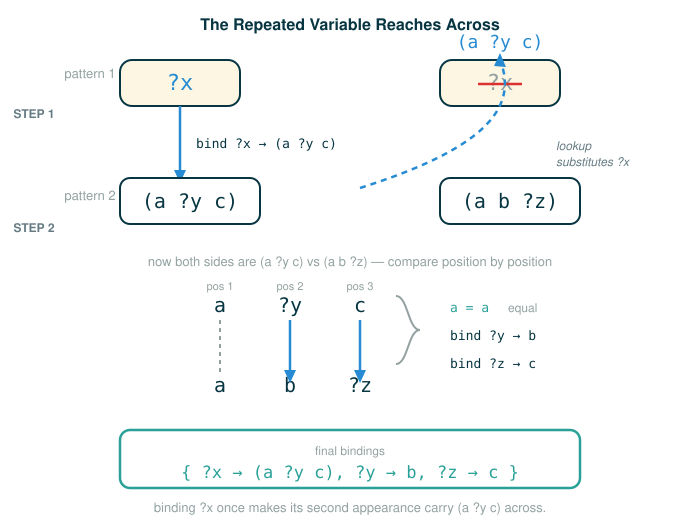

4.5.3 The Unification Algorithm
You have already seen pattern matching: one side is a pattern with variables, the other side is a concrete expression, and matching decides whether the concrete expression fits the pattern. This lesson takes the next step. Unification is the procedure that matches two expressions when both of them may contain variables, and records the variable bindings that make them equal.
By the end you will be able to do four things. You will be able to explain, in plain terms, what unification adds on top of pattern matching. You will be able to walk through the official example where (?x ?x) unifies with ((a ?y c) (a b ?z)) step by step, predicting every binding. You will be able to read the six-case description of the algorithm and connect each case to a line of the real unify function. And you will be able to explain the one surprising fact in the docstring: that the environment may be changed even when unification does not succeed.
A note on languages before we start. The facts, queries, and patterns of the logic language are written in a parenthesized, Lisp-like notation with ?-variables. That notation is not Python, so it is shown in plain or Scheme-style blocks. The unify function that implements the algorithm is ordinary Python, so it is shown in Python blocks. Keep that distinction in mind as you read.
An Intuition: Two Half-Finished Forms
Pattern matching is like fitting one key into one lock. One side is fixed, the other side is shaped, and you check whether they meet.
Unification is more like comparing two half-finished forms. Imagine two people each filled out part of the same application. The first person wrote the same answer in two boxes but left the answer itself blank: "whatever goes in box one must also go in box two." The second person filled in some boxes with real values and left others blank, labeled "copy this from elsewhere." To merge the two forms into one fully consistent document, you have to figure out whether there is any way to fill every blank so that both people's constraints hold at once.
That is exactly what unification does. Each ?-variable is a blank that can be filled in. A repeated variable like ?x is the rule "these two blanks must end up identical." Unification searches for a single consistent way to fill in all the blanks. If it finds one, it records the fill-ins; if no consistent fill-in exists, it reports failure.
What Unification Is
Here is the official framing.
Unification is a generalization of pattern matching that attempts to find a mapping between two expressions that may both contain variables. The unify function carries this out through a recursive process: it performs unification on corresponding parts of the two expressions, drilling in piece by piece, until either it reaches a contradiction or it establishes a workable binding for every variable.
The hard part, compared to ordinary pattern matching, is that a variable may need to be bound to an expression that itself still contains other variables. You will see this happen in the very first example.
The Official Example
Start with the example the source uses. The two patterns are these.
(?x ?x)
((a ?y c) (a b ?z))Why should these unify at all? Because there is an expression with no variables that matches both:
((a b c) (a b c))The first pattern, (?x ?x), is "some value, repeated." If you set that value to (a b c), you get ((a b c) (a b c)). The second pattern, ((a ?y c) (a b ?z)), becomes the same thing when ?y is b and ?z is c. A single variable-free expression satisfies both patterns, so unification should succeed.
Before walking through the official reasoning, build the intuition on something smaller.
Warm-up: a single shared variable
Here is the simplest case of "both sides have a variable." Unify these two single-element expressions.
(?x)
(7)?x is a blank, 7 is a value. To make the two equal, bind ?x to 7. That is the whole result: ?x -> 7. Nothing recursive, nothing surprising. One variable, one value, one binding.
Bridge: a repeated variable that forces a choice
Now add the feature that makes unification more than matching: a repeated variable. Unify these.
(?x ?x)
(5 ?y)Walk the elements left to right. The first elements are ?x and 5, so bind ?x -> 5. The second elements are ?x and ?y. But ?x is no longer just a name; it already stands for 5. So you first replace ?x with its value 5, and then you are really matching 5 against ?y, which binds ?y -> 5. The repeated ?x reached across the two positions and forced ?y to become 5. That reaching-across is the exact mechanism the official example uses, just with a list instead of a single number.
The official step-by-step reasoning
Now the official case. Unification identifies the solution for (?x ?x) and ((a ?y c) (a b ?z)) via the following two steps, quoted from the source.
- To match the first element of each pattern, the variable
?xis bound to the expression(a ?y c). - To match the second element of each pattern, first the variable
?xis replaced by its value. Then,(a ?y c)is matched to(a b ?z)by binding?ytoband?ztoc.
Look closely at step 2, because it is where the repeated variable does its work. The second element of the first pattern is again ?x. But ?x was already bound in step 1, so it is replaced by its value (a ?y c). The comparison is therefore between (a ?y c) and the second element of the other pattern, (a b ?z). Matching those two lists position by position gives a against a (already equal), ?y against b (so ?y -> b), and c against ?z (so ?z -> c).

As a result, the bindings placed in the environment passed to unify contain entries for ?x, ?y, and ?z.
Following the Line: Reading the Bindings Transcript
This is the official transcript. It is an interactive logic-interpreter session, so it lives in a plain block; the lines beginning with >>> are what you type, and the lines without a prompt are what the interpreter prints back.
>>> e = read_line("(?x ?x)")
>>> f = read_line(" ((a ?y c) (a b ?z))")
>>> env = Frame(None)
>>> unify(e, f, env)
True
>>> env.bindings
{'?z': 'c', '?y': 'b', '?x': Pair('a', Pair('?y', Pair('c', nil)))}The most informative line is the call to unify. Read it one token at a time.
unify(e, f, env)
├─ unify ....... the unification procedure
├─ ( ........... begins the inputs
├─ e ........... first expression, the parsed form of (?x ?x)
├─ , ........... separates the inputs
├─ f ........... second expression, the parsed form of ((a ?y c) (a b ?z))
├─ , ........... separates the inputs
├─ env ......... the frame that will receive the bindings
├─ ) ........... ends the inputs
└─ returns True, and env now holds bindings for ?x, ?y, and ?zNow read the dictionary it produced, again token by meaningful token.
{'?z': 'c', '?y': 'b', '?x': Pair('a', Pair('?y', Pair('c', nil)))}
├─ '?z': 'c' ........................... ?z is bound to the symbol c
├─ '?y': 'b' ........................... ?y is bound to the symbol b
├─ '?x': Pair('a', Pair('?y', ...)) .... ?x is bound to the list (a ?y c)
└─ result is a frame where ?x's value still mentions ?y, which is fineTwo things are worth noticing. First, the order of keys in the dictionary need not match the order you reasoned in; dictionaries print in their own internal order. Second, and more important, ?x is bound to a structure that still contains a variable, ?y. That is not a bug. The result of unification may bind a variable to an expression that also contains variables, as you see here with ?x bound to (a ?y c). It is consistent because ?y is itself bound, to b.
Following the Line: Resolving Bindings with bind
The environment stores ?x -> (a ?y c), which is correct but not fully resolved. To get the variable-free answer, the interpreter uses bind. The bind function recursively and repeatedly binds all variables to their values in an expression until no bound variables remain.
This is the official transcript, again a logic-interpreter session.
>>> print(bind(e, env))
((a b c) (a b c))Follow the call.
print(bind(e, env))
├─ print ....... display the result
├─ ( ........... begins print's input
├─ bind ........ the resolver: replace every variable by its value, repeatedly
├─ ( ........... begins bind's inputs
├─ e ........... the expression (?x ?x) to resolve
├─ , ........... separates bind's inputs
├─ env ......... the frame holding the bindings for ?x, ?y, ?z
├─ ) ........... ends bind's inputs
├─ ) ........... ends print's input
└─ prints ((a b c) (a b c)), every variable fully resolvedTrace why the output is ((a b c) (a b c)). Resolving e, which is (?x ?x), replaces each ?x with its value (a ?y c). But (a ?y c) still mentions ?y, so bind keeps going and replaces ?y with b, giving (a b c). Both copies of ?x resolve to (a b c), so the whole expression resolves to ((a b c) (a b c)). That is precisely the variable-free expression we predicted would match both patterns at the start.
The Six Cases of unify
In general, unification proceeds by checking several conditions. The implementation of unify directly follows the description below, quoted from the source.
- Both inputs
eandfare replaced by their values if they are variables. - If
eandfare equal, unification succeeds. - If
eis a variable, unification succeeds andeis bound tof. - If
fis a variable, unification succeeds andfis bound toe. - If neither is a variable, both are not lists, and they are not equal, then
eandfcannot be unified, and so unification fails. - If none of these cases holds, then
eandfare both pairs, and so unification is performed on both their first and second corresponding elements.
A word on case 5. A non-list value such as a symbol or a number is an atom. If two atoms are not equal, there is no smaller structure inside them to inspect, so there is nothing left to try and unification fails. Case 6 is the opposite situation: if neither input is an atom, both must be pairs, and a pair can always be broken into a first part and a second part, so unification recurses into those parts. For two lists to unify, their first elements must unify and the remainders of the lists must unify.
Following the Line: The Official unify Code
Now the implementation. This is Python: it is the code that runs the algorithm, so it carries sequential code labels. The block is shown as an interactive Python session, exactly as the source presents it.
# (1)
>>> def unify(e, f, env):
"""Destructively extend ENV so as to unify (make equal) e and f, returning
True if this succeeds and False otherwise. ENV may be modified in either
case (its existing bindings are never changed)."""
e = lookup(e, env)
f = lookup(f, env)
if e == f:
return True
elif isvar(e):
env.define(e, f)
return True
elif isvar(f):
env.define(f, e)
return True
elif scheme_atomp(e) or scheme_atomp(f):
return False
else:
return unify(e.first, f.first, env) and unify(e.second, f.second, env)
Each branch of this function is one of the six cases. The first interesting line is the pair of lookups, then the chain of if/elif/else. Read the header and the body's decisions one piece at a time.
def unify(e, f, env):
├─ def ......... begins a function definition
├─ unify ....... the name of the function
├─ (e, f, env) the two expressions to unify and the frame to extend
├─ : ........... begins the body
└─ does recursively decides whether e and f can be made equal, extending envNow the body, line by load-bearing line, mapped to the six cases.
e = lookup(e, env); f = lookup(f, env)
├─ lookup(e, env) ...... case 1: replace e with its value if e is a bound variable
├─ lookup(f, env) ...... case 1: replace f with its value if f is a bound variable
└─ effect both inputs are now their current values before any comparisonif e == f: return True
├─ e == f .............. case 2: the two values are already equal
└─ action succeed immediately, no new binding neededelif isvar(e): env.define(e, f); return True
├─ isvar(e) ............ case 3: e is an unbound variable
├─ env.define(e, f) .... record the binding e -> f in the frame
└─ action succeed; env is now extendedelif isvar(f): env.define(f, e); return True
├─ isvar(f) ............ case 4: f is an unbound variable
├─ env.define(f, e) .... record the binding f -> e in the frame
└─ action succeed; env is now extendedelif scheme_atomp(e) or scheme_atomp(f): return False
├─ scheme_atomp(e) ..... e is an atom (a non-list value)
├─ scheme_atomp(f) ..... or f is an atom
└─ action case 5: an atom that was not equal cannot be unified; failelse: return unify(e.first, f.first, env) and unify(e.second, f.second, env)
├─ unify(e.first, f.first, env) ...... case 6: unify the two first elements
├─ and ............................... both subproblems must succeed
├─ unify(e.second, f.second, env) .... and unify the two remainders
└─ action succeed only if first parts and rest parts both unifyThat last line is the recursive heart of the algorithm. A list is a first element joined to a second (the rest of the list), so two lists unify exactly when their first elements unify and their second parts unify. The single and enforces "both halves must agree."
A Full Trace of the Official Unification
Put the code and the example together. Here is unify(e, f, env) for e = (?x ?x) and f = ((a ?y c) (a b ?z)), starting from an empty frame. Each row is one call to unify, showing which case fires and what happens to the environment.
| Call (e vs f) | After lookup | Case | Effect |
|---|---|---|---|
(?x ?x) vs ((a ?y c) (a b ?z)) |
both are pairs | 6 | recurse on first parts, then second parts |
first parts: ?x vs (a ?y c) |
?x unbound |
3 | bind ?x -> (a ?y c), return True |
second parts: (?x) vs ((a b ?z)) |
both are pairs | 6 | recurse on first parts, then second parts |
first parts: ?x vs (a b ?z) |
?x -> (a ?y c) |
6 | now a pair vs a pair; recurse |
a vs a |
equal atoms | 2 | return True |
(?y c) vs (b ?z) |
both pairs | 6 | recurse |
?y vs b |
?y unbound |
3 | bind ?y -> b, return True |
(c) vs (?z) |
both pairs | 6 | recurse |
c vs ?z |
?z unbound |
4 | bind ?z -> c, return True |
nil vs nil |
equal | 2 | return True (lists ended together) |
Every subproblem returned True, so the whole call returns True, and the frame now holds ?x -> (a ?y c), ?y -> b, and ?z -> c. Notice the key moment: when the second ?x came up, lookup had already turned it into (a ?y c), which is why the comparison against (a b ?z) is a pair-versus-pair recursion (case 6) rather than a variable binding. That is the repeated variable reaching across positions, now visible as a single line in the trace.
Why the Environment May Change Even on Failure
Read the docstring again, slowly: the function will "Destructively extend ENV so as to unify (make equal) e and f, returning True if this succeeds and False otherwise. ENV may be modified in either case (its existing bindings are never changed)."
There are two claims packed into that sentence. The first is reassuring: the bindings that were already in the frame are never altered. Unification only adds bindings; it never overwrites an existing one. The second claim is the surprising one: even when unification ultimately returns False, some bindings may already have been added along the way.
Why can that happen? Because of case 6. A pair-versus-pair unification calls unify on the first parts and then on the second parts, joined by and. Python evaluates the first call before the second. If the first call succeeds, it may have added a binding to the frame; if the second call then fails, the function returns False, but the binding from the first call is still sitting in the frame. The word "destructively" in the docstring is the signal: unify writes directly into the frame as it goes, rather than computing a result and committing it only at the end.
This is safe in practice because of how the larger machinery uses unify. The procedure that drives the overall proof search hands unify a fresh frame for each attempt it makes, so a half-filled frame from a failed attempt is simply discarded rather than reused. The details of that search procedure are the subject of a later section; for now the takeaway is narrower. Treat a frame passed to unify as scratch space for a single attempt. If unify returns True, the bindings in that frame are meaningful. If it returns False, the frame may contain leftover bindings, and you should not trust them.
⚠Common Beginner Traps
- Treating unification as ordinary equality. It is equality plus the freedom to bind variables until the two sides match.
5 == 6is just false, but?xunifying with5succeeds by binding?x -> 5. - Forgetting case 1. Before comparing
eandf, you must replace each one with its current value if it is a bound variable. Skipping the lookup makes you compare a variable name instead of the expression it now stands for, which is the single most common mistake in tracing. - Believing a variable can change meaning mid-unification. Once
?xis bound, it stays bound for the rest of that attempt. The second appearance of?xis replaced by its first value, not re-bound to something new. - Panicking when a variable is bound to an expression that still contains another variable, like
?x -> (a ?y c). That is normal and consistent, as long as the inner variable is itself bound.bindresolves these chains later. - Misreading case 6. Two lists do not unify just because their first elements match. The first elements must unify and the remainders must unify; the
andis doing real work. - Assuming a
Falseresult leaves the frame untouched. It may have added bindings before failing. That is exactly what "ENV may be modified in either case" warns you about.
✓Check Your Understanding
- Unify
(?x ?x)with(2 ?y)starting from an empty frame. Walking left to right, what value gets bound to?x, and what then gets bound to?y? - Why does
(?x ?x)unify with((a ?y c) (a b ?z)), and what single variable-free expression matches both? - In the official example, what are the final bindings for
?x,?y, and?z, and why is it acceptable for?x's binding to still contain?y? - Why must
unifycalllookuponeandfbefore comparing them? - Which case of
unifycauses failure, and why is there nothing left to try in that case? - The docstring says the environment "may be modified in either case." Explain how a binding can end up in the frame even when
unifyreturnsFalse.
Show the answers
- The first elements are
?xand2, so?x -> 2. The second elements are?xand?y;?xnow looks up to2, so the comparison is2against?y, giving?y -> 2. Both bindings are2, with the repeated?xforcing?ythroughlookup. - They unify because there is a variable-free expression that matches both patterns:
((a b c) (a b c)). Setting?xto(a b c),?ytob, and?ztocsatisfies both. ?x -> (a ?y c),?y -> b, and?z -> c. It is acceptable for?x's value to mention?ybecause?yis itself bound tob;bindresolves the chain, turning?xinto(a b c).- Because either input might be a variable that already has a value.
lookupreplaces it with that value first, so the comparison and recursion act on the real expressions, not on stale variable names. - Case 5: when at least one side is an atom and the two sides are not equal. Atoms have no internal first/second structure to recurse into, so there is no smaller subproblem to attempt, and unification fails.
- Case 6 unifies first parts, then second parts, joined by
and. If the first parts unify, a binding may be added to the frame; if the second parts then fail to unify,unifyreturnsFalse, but the binding from the first step has already been written destructively into the frame.
§Summary
Unification generalizes pattern matching: it takes two expressions that may both contain variables and tries to find a consistent set of bindings that make them equal. The official unify function does this recursively through six cases: look up bound variables first, succeed on equality, bind an unbound e or f to the other side, fail when unequal atoms have no inner structure, and otherwise recurse into the first and second parts of two pairs, requiring both to unify. The official example, (?x ?x) against ((a ?y c) (a b ?z)), shows the defining feature in action: a repeated variable binds once and then, through lookup, forces the bindings ?y -> b and ?z -> c on its second appearance, producing the variable-free result ((a b c) (a b c)) once bind resolves the chain. Finally, because unify writes bindings destructively as it goes, the environment may already hold partial bindings even when an attempt fails, which is why each attempt in the larger search is given its own fresh frame to use as scratch space.
▶Step-Through Checkpoint
The next block is a self-contained, runnable Python model of the unification machinery: it uses plain lists in place of the interpreter's Pair structures but follows the same six cases. Stepping through it draws the environment diagram of the recursion: each recursive unify call opens its own frame for e and f, the frames stack up as the algorithm drills into corresponding list elements, and the single bindings dict on the heap in the global frame grows an entry each time is_var(e) or is_var(f) fires, with lookup reaching back into that shared dict to resolve ?x to ["a", "?y", "c"] on its second appearance. Before you step through the block below, write down two predictions: how many calls to unify will open over the whole run, and in what order the three keys will appear when the last line prints the dictionary.
# (2)
bindings = {}
def is_var(x):
return isinstance(x, str) and x.startswith("?")
def lookup(x):
while is_var(x) and x in bindings:
x = bindings[x]
return x
def unify(e, f):
e = lookup(e)
f = lookup(f)
if e == f:
return True
if is_var(e):
bindings[e] = f
return True
if is_var(f):
bindings[f] = e
return True
if not isinstance(e, list) or not isinstance(f, list):
return False
if len(e) != len(f):
return False
for i in range(len(e)):
if not unify(e[i], f[i]):
return False
return True
left = ["?x", "?x"]
right = [["a", "?y", "c"], ["a", "b", "?z"]]
print(unify(left, right))
print(bindings)
Check each prediction as you step. Six calls to unify open in all: one for the outer lists, one for each element, and three inside the second of those. When the second element's call begins, bindings already maps ?x to ["a", "?y", "c"], so lookup turns that comparison into list-against-list recursion rather than a fresh binding. The run prints True, and the keys print in the order the bindings were created, ?x, then ?y mapped to "b", then ?z mapped to "c", not the order of the official transcript. The official interpreter would then run bind over left to collapse those chains into the fully resolved [["a", "b", "c"], ["a", "b", "c"]].